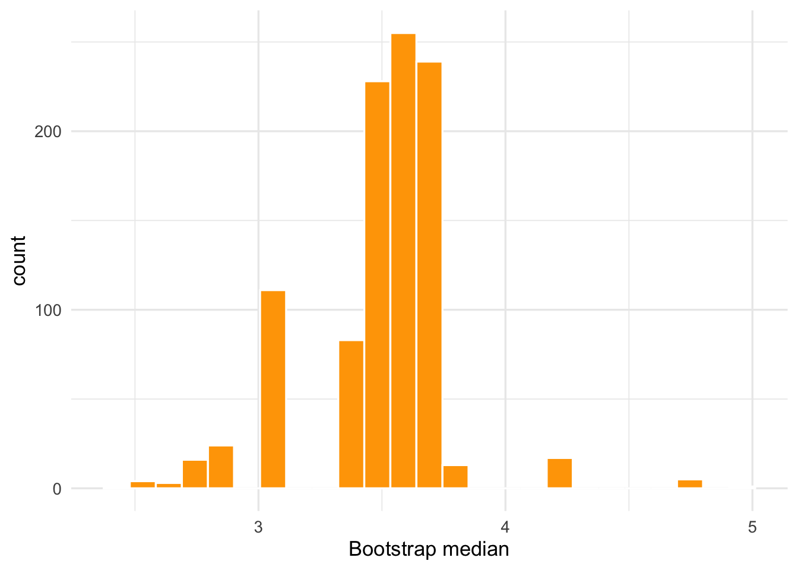

Lesson 5
Resampling
Learning Objectives
After this lesson, students will be able to:
Define the bootstrap method.
Define cross-validation and distinguish between different approaches to cross-validation.
Use the methods in the
rsamplepackage to generate appropriate resamples.Apply bootstrap and cross-validation methods to obtain relevant information about regression and classification models.
Readings, etc.
For this lesson:
Read chapter 5 from of An Introduction to Statistical Learning (Tibshirani, James, and Trevor 2017). You may also want to read chapter 4 of Statistical Learning with Math and R (Suzuki 2020).
Watch the corresponding video lecture on cross validation. View on YouTube.
- Watch the “Spending your data budget” section of the following video. View on YouTube.
Overview
Machine learning algorithms estimate parameters or other features of a model. It is important to assess the accuracy or uncertainty associated with any estimate. For the purposes of prediction, we are ultimately concerned with how a model performs on a previously unseen set of test data. However, as soon as the model sees the test data, it should not be used again. Thus, in choosing a good model we need to be able to estimate test error without directly use of the test set. Furthermore, we have seen that the specification of some types of models requires the selection of values for one or more hyperparameters.
Notice that in both cases of model fitting and model assessment, there is something that we want to estimate and the value of the estimate will depend on the sampled data. For example, in model fitting we may estimate a parameter while in model assessment we will estimate the test error. From a statistical perspective, we can view whatever it is we are estimating as a random variable so that our problem becomes to learn as much as we can about the distribution of that random variable.
Resampling methods involve judiciously choosing multiple subsets of our data, typically the training set as a way to solve the problems outlined in the last paragraph. The bootstrap samples with replacement from the data in order to assess the accuracy or uncertainty associated with an estimate. Cross-validation (CV) holds out pieces of the data in order to assess the predictive accuracy of a model or to select hyperparameter values.
Resampling methods are computation intensive because they involve refitting or re-estimating a model or parameters many times. On the other hand, resampling methods can be used in many more situations than analytic procedures can. Further, with the increased power and speed of modern computers and efficient implementations of algorithms used for resampling, resampling methods have become indispensable tools in modern statistics and machine learning.
The R package rsample, which is part of the tidymodels family provides functions to create different types of resamples and facilitates their use in many analyses. The rsample package provides a set of methods that can be used for:
Resampling for estimating the sampling distribution of a statistic.
Estimating model performance using a holdout set.
In this lesson, we will explain in detail the bootstrap and cross-validation resampling methods and learn how to use rsample for generating resamples. We will also see some use cases for the bootstrap and cross-validation.
Bootstrap
A common assumption of statistical models is that we have an independent and identically distributed sequence of random variables. Mathematically, \(X_{1}, X_{2}, \ldots , X_{n} \sim F\), where \(F\) is a (typically unknown) cumulative distribution function. The empirical distribution function (EDF) \(\hat{F}_{n}\) is defined by
\[ \hat{F}_{n}(x) = \frac{1}{n}\sum_{i=1}^{n}I(X_{i} \leq x) \]
where \(I\) is the indicator function we have seen before. The EDF satisfies for any fixed value \(x\):
\(\text{E}[\hat{F}_{n}(x)] = F(x)\), and
\(\text{Var}[\hat{F}_{n}(x)] = \frac{F(x)(1 - F(x))}{n}\)
For a statistic, that is, any function of the sample \(T_{n} = g(X_{1},X_{2},\ldots, X_{n})\) the bootstrap estimates the variance \(\text{Var}_{F}(T_{n})\) by \(\text{Var}_{\hat{F}_{n}}(T_{n})\). This is what’s called a plug-in estimator. Here’s how it works in practice:
Draw a sample \(X_{1}^{\ast}, \ldots , X_{n}^{\ast} \sim \hat{F}_{n}\).
Compute \(T_{n}^{\ast} = g(X_{1}^{\ast}, \ldots , X_{n}^{\ast})\).
Repeat steps 1 and 2, \(B\) times to get \(T_{n,1}^{\ast}, \ldots T_{n,B}^{\ast}\).
Define the bootstrap variance by
\[ \mathcal{v}_{\text{boot}} = \frac{1}{B}\sum_{b=1}^{B}\left(T_{n,b}^{\ast} - \frac{1}{B}\sum_{r=1}^{B}T_{n,r}^{\ast} \right)^{2} \] It can be shown that \(\mathcal{v}_{\text{boot}}\) converges in a specific sense to \(\text{Var}_{\hat{F}_{n}}(T_{n})\) as \(B \rightarrow \infty\). To do this, we need to simulate \(\hat{F}_{n}\). Since \(\hat{F}_{n}\) give probability \(\frac{1}{n}\) to each data point, drawing \(n\) points at random from \(\hat{F}_{n}\) is the same as drawing a sample of size \(n\) with replacement from the original data. So, we would replace step 1 above with
1’. Draw \(X_{1}^{\ast}, \ldots , X_{n}^{\ast}\) with replacement from \(X_{1}, \ldots , X_{n}\).
Intuitively, if a sample is representative of a population, then many samples with replacement from the sample should be representative of the sampling distribution. Figure 1 illustrates the bootstrap resampling process.

Let’s look at a simple example by bootstraping the median of some sample data:
set.seed(1234)
sample_data <- rnorm(45,mean = 5, sd = 2.75)
(t_med <- median(sample_data))[1] 3.594724med_resamp <- function(id_val){
ts_med <- median(sample(sample_data,replace=TRUE))
}
B <- 1000
ts_med_vals <- map_dbl(1:B,med_resamp)
(se_boot <- sd(ts_med_vals))[1] 0.2782101We can plot our bootstrapped median estimates to get an even better understanding of the variation of our statistic:
Code
ts_meds_df <- tibble(ts_meds = ts_med_vals)
ts_meds_df %>%
ggplot(aes(x=ts_meds)) +
geom_histogram(color="white",fill="orange",bins=25) +
labs(x = "Bootstrap median")
In Figure 2 we see that the mean of our bootstrap estimates is the value of the statistic for the original sample data.
Later in this lesson we will see how to use the rsample package to efficiently generate the resamples needed for step 1’. Further, we will look at a detailed application of the bootstrap to a more complicated statistical model.
Cross-validation
There are difference approaches to cross-validation but the most common method is \(V\)-fold cross-validation1. This method involves randomly dividing the training set into \(V\) groups called folds of approximately equal size. The first fold is treated as a validation set and the model is fit on the remaining \(V-1\) folds. Then, the error \(E_{1}\) is computed for the held out set. This procedure is repeated \(V\) times and the \(V\)-fold CV estimate for the test error is
\[ \text{CV}_{V} = \frac{1}{V}\sum_{i=1}^{k}E_{i} \] Figure 3 illustrates \(V\)-fold cross-validation for \(V=5\).

Whenever \(V=1\), we have what is known as leave one out cross-validation (LOOCV). The most common values for \(V\) are five and ten. In the next section, we will see how to efficiently create the folds for cross-validation using the rsample package. Then later, we will look at a detailed application of cross-validation to some machine learning models.
Using rsample
The rsample package contains functions to create various types of “data splits” and can be used for purposes of resampling. Some examples of functions from rsample include:
initial_split- creates a single binary split of the data into a training set and testing set. We have seen this function before, it creates a so-calledrsplitobject.
initial_split(penguins)<Training/Testing/Total>
<258/86/344>initial_validation_split- creates a random three-way split of the data into a training set, a validation set, and a testing set. This can be used for very simple tuning tasks or in case you have a very large data set. It creates arsplotobject similar toinitial_split.
initial_validation_split(penguins)<Training/Validation/Testing/Total>
<206/69/69/344>bootstraps- creates samples that are the same size as the original data set that is made using replacement. This creates a data frame with a column ofrsplitobjects namedsplits.
bootstraps(penguins,times=5)# Bootstrap sampling
# A tibble: 5 × 2
splits id
<list> <chr>
1 <split [344/125]> Bootstrap1
2 <split [344/136]> Bootstrap2
3 <split [344/126]> Bootstrap3
4 <split [344/140]> Bootstrap4
5 <split [344/121]> Bootstrap5vfold_cv- randomly splits the data into V groups of roughly equal size (called “folds”). Also creates a data frame with a column ofrsplitobjects namedsplits.
vfold_cv(penguins,v=5)# 5-fold cross-validation
# A tibble: 5 × 2
splits id
<list> <chr>
1 <split [275/69]> Fold1
2 <split [275/69]> Fold2
3 <split [275/69]> Fold3
4 <split [275/69]> Fold4
5 <split [276/68]> Fold5Note: There are a couple of other similar functions such as loo_cv and mc_cv that you will be asked to explore in the homework.
Note that resampled data sets created by rsample are directly accessible in a resampling object but do not contain much overhead in memory. Since the original data is not modified, R does not make an automatic copy. For example, creating 50 bootstraps of a data set does not create an object that is 50-fold larger in memory.
Table 1 shows the results of a workflow involving rsample created with the following code:
Code
bootstraps(penguins,times=5) %>%
mutate(analysis_df = map(splits, ~analysis(.x)),
assessment_df = map(splits, ~assessment(.x))) %>%
unnest(analysis_df) %>%
group_by(id) %>%
summarise(boot_mean_bill_length_mm = mean(bill_length_mm ,na.rm=TRUE),
boot_median_bill_length_mm = median(bill_length_mm ,na.rm=TRUE),
boot_sd_bill_length_mm = sd(bill_length_mm ,na.rm=TRUE)) %>%
kable()| id | boot_mean_bill_length_mm | boot_median_bill_length_mm | boot_sd_bill_length_mm |
|---|---|---|---|
| Bootstrap1 | 43.96268 | 44.5 | 5.380798 |
| Bootstrap2 | 44.22551 | 45.1 | 5.257893 |
| Bootstrap3 | 43.44575 | 44.0 | 5.331782 |
| Bootstrap4 | 43.95306 | 44.5 | 5.333140 |
| Bootstrap5 | 43.88692 | 44.9 | 5.473746 |
Essentially what the code has done is to create 5 bootstrap samples from a data set, extract the data frame of each bootstrap resample, and then compute some statistics for a variable in the data frame of each bootstrap resample. Let’s experiment with this code in our own R session and work together on some further examples of using rsample.
Preparation for the next lesson
For the next lesson we will cover tree-based methods. To prepare for the next lesson, please do the following:
Read chapter 8 from of An Introduction to Statistical Learning (Tibshirani, James, and Trevor 2017). You may also want to read chapter 8 of Statistical Learning with Math and R (Suzuki 2020).
Watch the corresponding video lecture on decision trees. View on YouTube.
Go through the following two blog posts by Julia Silge:
References
Suzuki, Joe. 2020. Statistical Learning with Math and r. Springer.
Tibshirani, Hastie Robert, Gareth James, and Daniela Witten Trevor. 2017. An Introduction to Statistical Learning. springer publication.
Expand for Session Info
─ Session info ───────────────────────────────────────────────────────────────
setting value
version R version 4.3.1 (2023-06-16)
os macOS Ventura 13.5.2
system aarch64, darwin20
ui X11
language (EN)
collate en_US.UTF-8
ctype en_US.UTF-8
tz America/New_York
date 2023-09-21
pandoc 3.1.1 @ /Applications/RStudio.app/Contents/Resources/app/quarto/bin/tools/ (via rmarkdown)
quarto 1.3.450 @ /usr/local/bin/quarto
─ Packages ───────────────────────────────────────────────────────────────────
package * version date (UTC) lib source
broom * 1.0.5 2023-06-09 [1] CRAN (R 4.3.0)
dials * 1.2.0 2023-04-03 [1] CRAN (R 4.3.0)
dplyr * 1.1.3 2023-09-03 [1] CRAN (R 4.3.0)
forcats * 1.0.0 2023-01-29 [1] CRAN (R 4.3.0)
ggplot2 * 3.4.3 2023-08-14 [1] CRAN (R 4.3.0)
infer * 1.0.5 2023-09-06 [1] CRAN (R 4.3.0)
kableExtra * 1.3.4 2021-02-20 [1] CRAN (R 4.3.0)
lubridate * 1.9.2 2023-02-10 [1] CRAN (R 4.3.0)
modeldata * 1.2.0 2023-08-09 [1] CRAN (R 4.3.0)
parsnip * 1.1.1 2023-08-17 [1] CRAN (R 4.3.0)
purrr * 1.0.2 2023-08-10 [1] CRAN (R 4.3.0)
readr * 2.1.4 2023-02-10 [1] CRAN (R 4.3.0)
recipes * 1.0.8 2023-08-25 [1] CRAN (R 4.3.0)
rsample * 1.2.0 2023-08-23 [1] CRAN (R 4.3.0)
scales * 1.2.1 2022-08-20 [1] CRAN (R 4.3.0)
sessioninfo * 1.2.2 2021-12-06 [1] CRAN (R 4.3.0)
stringr * 1.5.0 2022-12-02 [1] CRAN (R 4.3.0)
tibble * 3.2.1 2023-03-20 [1] CRAN (R 4.3.0)
tidymodels * 1.1.1 2023-08-24 [1] CRAN (R 4.3.0)
tidyr * 1.3.0 2023-01-24 [1] CRAN (R 4.3.0)
tidyverse * 2.0.0 2023-02-22 [1] CRAN (R 4.3.0)
tune * 1.1.2 2023-08-23 [1] CRAN (R 4.3.0)
workflows * 1.1.3 2023-02-22 [1] CRAN (R 4.3.0)
workflowsets * 1.0.1 2023-04-06 [1] CRAN (R 4.3.0)
yardstick * 1.2.0 2023-04-21 [1] CRAN (R 4.3.0)
[1] /Library/Frameworks/R.framework/Versions/4.3-arm64/Resources/library
──────────────────────────────────────────────────────────────────────────────
Footnotes
\(V\)-fold cross-validation is also commonly referred to as \(k\)-fold cross-validation but we avoid the \(k\) notation because \(k\) will appear as a hyperparameter for several of the machine learning algorithms we will discuss.↩︎
Reuse
CC BY-NC-SA 4.0